首次操作回放 · 中英 1280×720
真实 GPU 渲染，Viewport 合成鼠标与键盘事件。not-incomplete-run 为未接灯的探查，not-complete 为完成面板淡入中；不代表原生输入或新玩家验收。
zh_CN-half-adder-briefing zh_CN-half-adder-entry
zh_CN-half-adder-entry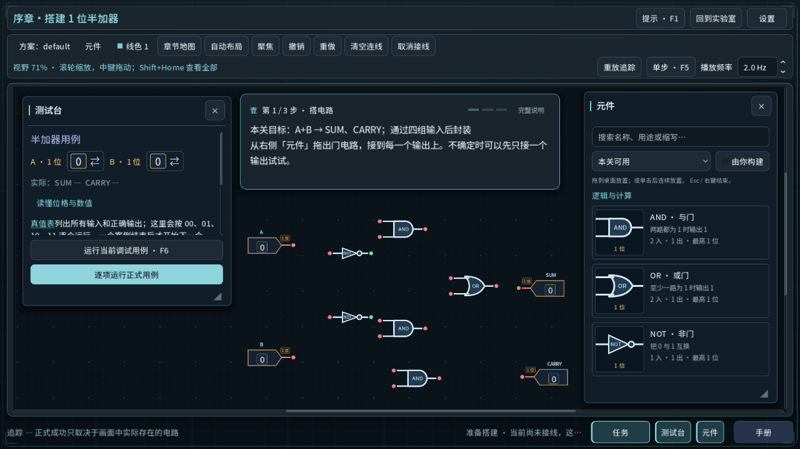
zh_CN-invitation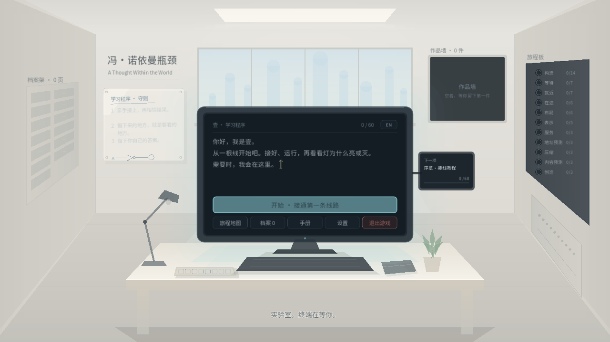
zh_CN-not-complete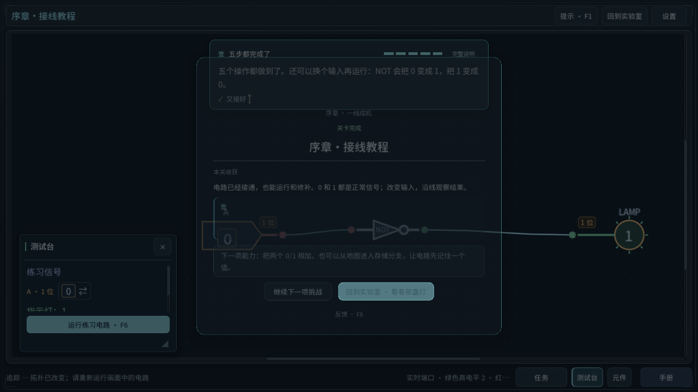
zh_CN-not-entry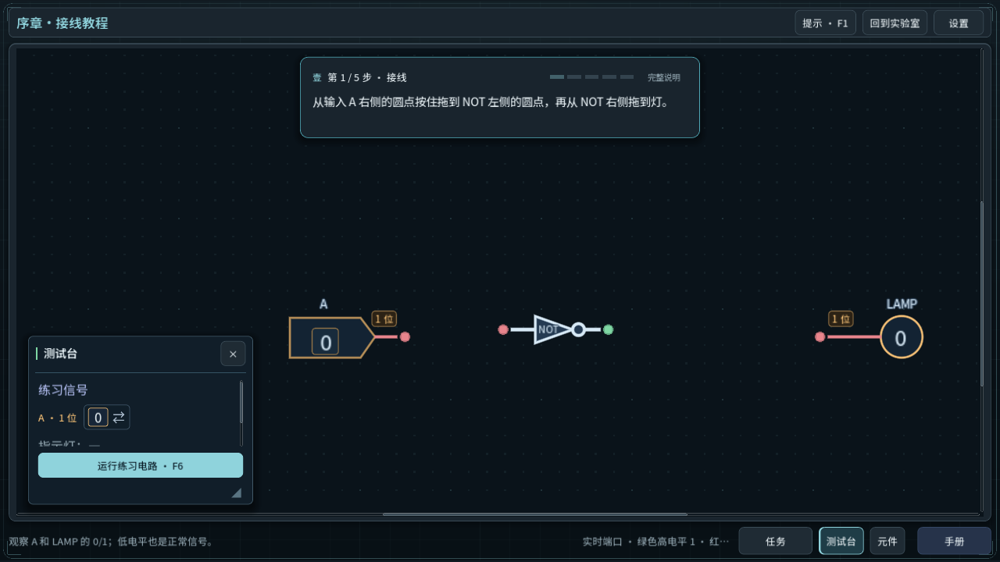
zh_CN-not-first-wirezh_CN-not-incomplete-run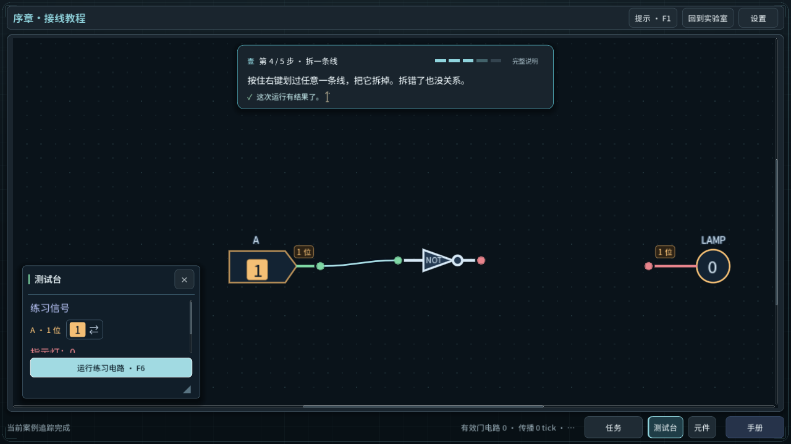
zh_CN-not-other-input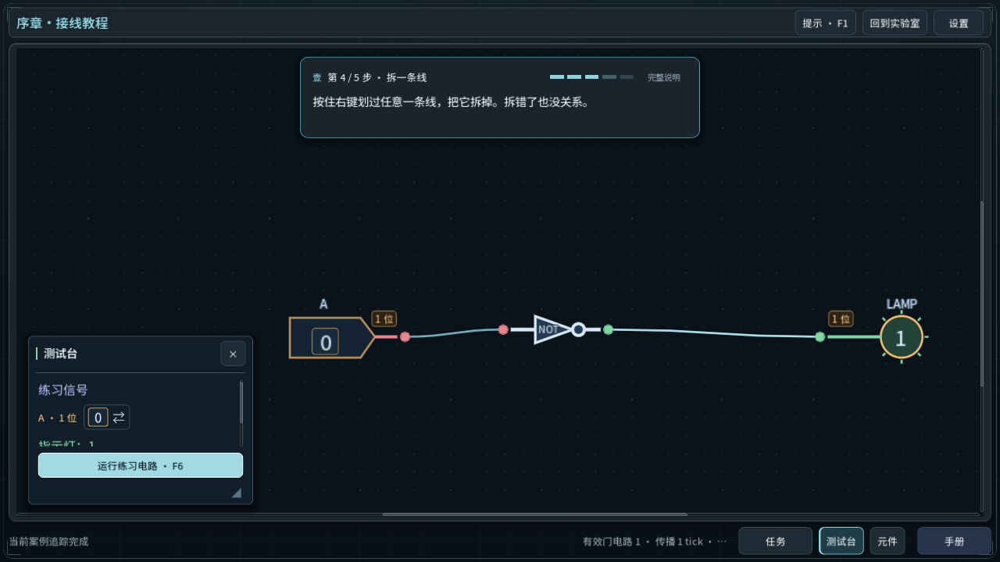
zh_CN-not-removed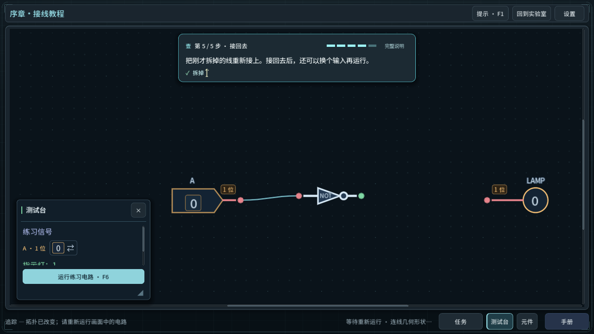
zh_CN-not-result en-half-adder-briefing
en-half-adder-briefing en-half-adder-entry
en-half-adder-entry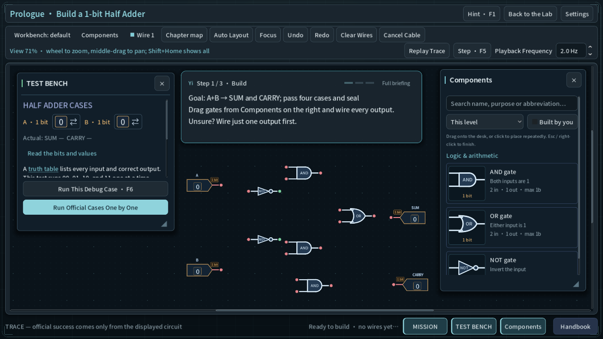
en-invitationen-not-complete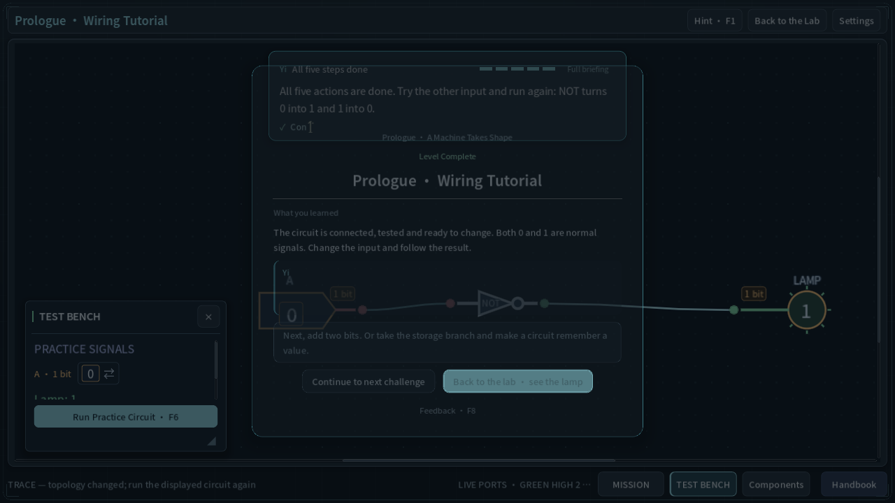
en-not-entry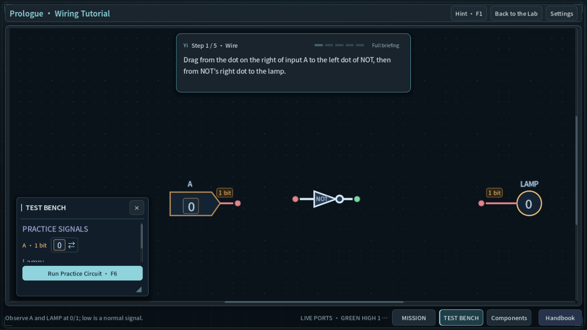
en-not-first-wire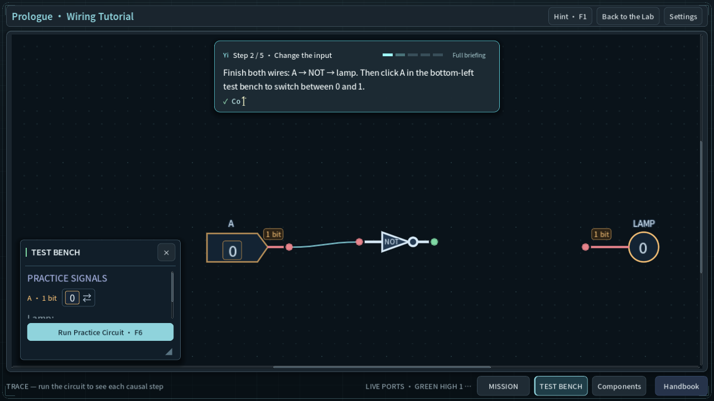
en-not-incomplete-run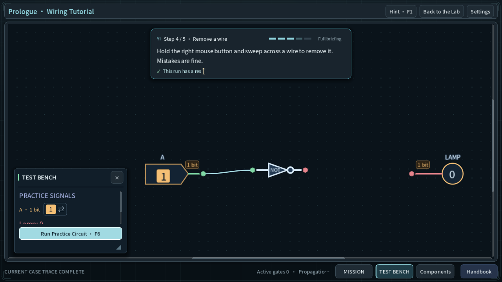
en-not-other-input en-not-removed
en-not-removed en-not-result
en-not-result